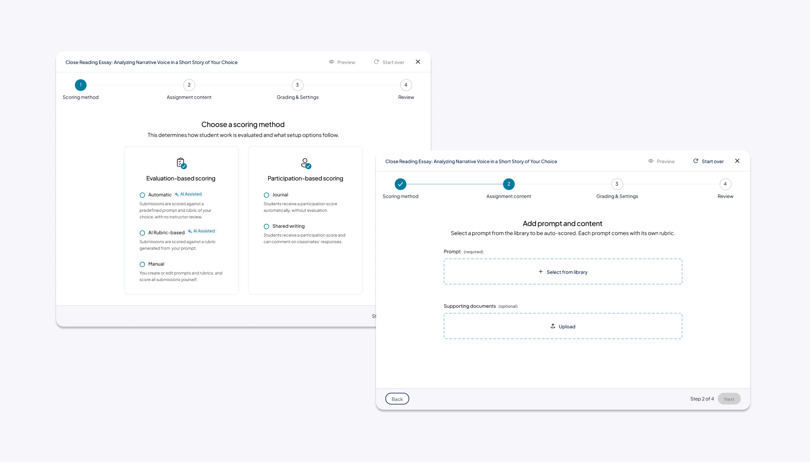

Restructuring assignment creation around how instructors actually think.
A redesign of the assignment-creation flow in Writing Solutions, an instructor-facing assessment tool in beta release. Audit findings set the strategic foundation; the redesign extended them to address issues unique to this product.
A structural redesign, not surface UI tweaks.
-
01
Reduced confusion during setup
The redesigned flow better matched instructor expectations and reduced the back-and-forth scrolling that defined the original page.
-
02
Clearer foundation for authoring across tools
The four-step pattern is reusable: Freehand Grader and other Generate products can adopt the same chrome and sequence rather than each inventing its own.
-
03
Honored system constraints without being dictated by them
The near-term coupling between scoring method and content authorship is real. The redesign surfaces it as a deliberate first step instead of letting it bleed across the page.
-
04
Translated platform-level audit insights into structural workflow change
Demonstrated how strategic audit findings turn into concrete IA decisions when the underlying constraints are taken seriously.
From audit findings to a redesign.
Writing Solutions is an instructor-facing assessment tool for creating and grading typed assignments, in beta release as part of Pearson's "Generate" portfolio. Following a platform-wide UX audit, the assignment-creation flow emerged as a key opportunity to address recurring issues around cognitive load, decision clarity, and misalignment with instructor mental models.
This case study focuses on redesigning assignment creation. Audit findings provided the strategic foundation; the redesign extended them to address issues unique to Writing Solutions.
Every decision on one scroll.
The existing assignment-creation page stacked every decision into a single scroll. Because some choices affected others downstream, users had to scroll back constantly to revise.

This forced instructors to context-switch constantly while scrolling up and down:
The structure conflicted with both:
- Learning design sequencing, outcomes → assessment → feedback.
- Instructor mental models, content first, grading implications later.
Compounding this, several high-impact decisions (e.g., automatic vs. instructor-graded paths) had implications that weren't clearly communicated, leading to confusion, rework, and mismatch between instructional intent and actual assignment behavior.
Three patterns that applied directly here.
The platform-wide audit had already surfaced patterns that applied directly to this flow:
- Complexity was front-loaded instead of progressively revealed.
- Decision points lacked clear explanations of impact.
- Flow structure followed tool constraints rather than instructor mental models.
Assignment creation was a clean candidate for applying these findings concretely. Read the audit case study →
A system coupling that shaped the order.
Before designing the ideal flow, I had to account for a near-term system constraint: in WSOL, scoring method determines whether prompts are system-defined or instructor-authored.
Practically, that meant scoring intent had to be surfaced first, with content creation following within those constraints. The coupling may loosen long-term, but the near-term redesign had to work within it, and honor it visibly rather than designing around it.
Four principles for the redesign.
- Reduce cognitive load at early stages.
- Make the consequences of major decisions explicit.
- Defer advanced or conditional options until they're relevant.
- Honor system constraints without letting them dictate the entire experience.
Page-level chrome, then a four-step flow.
The redesign worked at two levels. First, structural changes to the page itself, the chrome that wraps every step. Then, a re-sequencing of the actual decisions into four steps.
Page-level chrome
Progress stepper at the top
A persistent 4-step tracker replaces the old single-scroll page. Users always see where they are and what's left.
Persistent footer with step controls
"Back / Next / Step X of 4" lives in a sticky footer. Replaces the original Preview / Save / Done buttons that disappeared the moment users scrolled.
Removed the iFrame scroll trap
The original page nested its form inside an iFrame, creating two scroll containers. Users frequently scrolled the wrong one. The redesign removes the inner container entirely.

The four steps
Scoring method
Instructors first choose between automatic, AI-assisted, or manual / journal / shared writing. Helper text makes clear this choice determines whether the prompt will be system-defined or instructor-authored, and which downstream options are available. All content-related actions (like choosing a prompt) moved into step 2.

Assignment content
Based on the Step 1 choice, instructors either select a system prompt (automatic / AI-assisted) or write their own (manual / journal / shared). Supporting documents and an optional learning outcome are added here.

Evaluation & feedback
Grading is configured: rubric (if applicable), submission expectations (response length, citations), originality / plagiarism settings, and feedback options.
Review & assign
Instructors confirm the full setup before making the assignment available to students, then return to scheduling.

On learning outcomes.
Tying assignments to outcomes is good pedagogical practice, and Pearson's own guidance supports it. But in practice:
- Many instructors don't work this way day-to-day.
- Many courses already define outcomes elsewhere (syllabus, LMS, course settings).
- Forcing outcomes upfront measurably reduces adoption.
Removing the field entirely would weaken pedagogical alignment and limit downstream AI / analytics value. Requiring it would frustrate instructors, slow authoring, and feel bureaucratic.